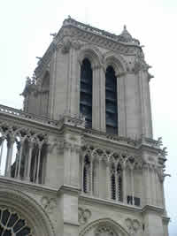
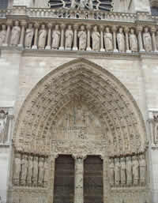
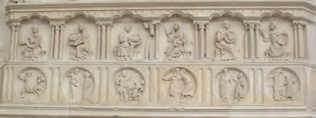

| 600 years ago, one of France's most beautiful cathedrals was built in the middle of the Ile de la Cité, the original centre of Paris. It was built in less than two centuries on the initiative of Maurice de Sully, King Louis VII and Pope Alexandre III, the first stone being laid in 1163 and work finishing in 1351. The Notre Dame of the Middle Ages is not as we know it today. As from the 18th century, it was defaced and subjected to all sorts of transformations until it was restored by Viollet Le Duc, whose motivation was to breathe life back into the medieval building, which had practically fallen into ruins at the beginning of the 19th century. Despite the prominent place that it occupies in the history books - don't forget that this was the era that was witness to a flamboyant gothic revival due to the Romantic imagination - this is the architect that can be credited with the conservation of this monument along with its gargoyles. |  |
What I would like to show here is the symbolic code used by the builders of the sacred. It would be wrong to think that the location, orientation and even the decoration were chosen at random according the good taste of some architect or other. Oh no - its layout is a lot more meticulous than that.
In addition to the symbolic figures prevalent in religious architecture (but requiring a considerable knowledge of maths that is far beyond my comprehension :o), cathedrals are built according to a truly mystic science. Analysing the space helps to shed some light on the subject. The location was not chosen at random. Medieval builders were highly conscientious in their study of what is known as telluric lines. That is why a parallel can be drawn between the vertical symbolism and the three worlds making up the universe.
Allow me to explain: the vertical elevation of the cathedral reproduces the way in which the three levels of the universe are stacked. The crypt symbolises the underworld, the walls and floor represent the living world, and the spires and towers depict heaven, thereby conserving the universal harmony.
For the horizontal plane, the architects relied on a system of solar symbols. The choir faces the east (sunrise) and logically has its back to the west, which symbolises the end of time. Similarly, the north side, which lies in the sun's shadow, represents sin and evil, whereas the south side is bathed in light and is devoted to the glory of Christ.
Notre Dame still has plenty of secrets in store for the uninitiated. As part of my own quest for wisdom, I've followed in the footsteps of the medieval alchemists on their initiatory journey :o)
Before you embark on this spiritual adventure, let's define what exactly the alchemical spirit is. We all know about the main principle being to transform metal into gold, the epitome of perfection. At the same time, it involved using human means to find the universal perfection inherent in immortality.
Alchemists, often denounced as sorcerers, developed a mysterious code. They interpreted the Christian iconography widespread in cathedrals as philosophical allegories. Notre Dame is particularly rich in alchemical symbols. It leads us to the path of wisdom, which begins with a deep understanding of oneself by determining the material to be transmuted. You simply need to study the west side for a better understanding of this rather occult aspect.
The west side of the cathedral is associated with the three
interior rose windows, which describe the initiatory journey of the
alchemists, a route outside the cosmic dimension and a path within the
human dimension.
The rose windows actually symbolise the path between the primeval darkness and the
completion of the work. Their concentric form conveys the idea of the
process of perpetual renewal.
|
 Central portal on the west side, whose medallions show the alchemical path. |
To make it easier to understand, you need to start with the central pillar and the statue of Cybele, the Phyrigian goddess of wisdom. She holds two books that might represent the Old and the New Testament. More specifically, the first book, which is open, conveys knowledge via the Texts, and the second book, which is closed, conveys the interior knowledge. This alchemical combination of a spiritual approach and knowledge of the Scriptures leads the novice to wisdom. On the outside, the journey starts from the portal of St Anne, mother of the Virgin, which depicts the birth of Christ. That is why the corresponding south rose window represents Christ as the Architect of the world. We are at the beginning of the path, the origin of the World. This beginning can be associated with the putrefaction of the alchemists, called the black work. It consists of removing the impurities from the material, which in spiritual terms means cleansing the soul. |
The journey continues with the portal of the Virgin, which represents the time cycle of the seasons and work. The west rose window, on the other hand, portrays the night sky and the synthesis of the work. It therefore consists of spiritualising the material (man in this case) and restoring his soul in the previously cleansed body.
Finally, the central portal depicts the Last Judgement, the finished work; in other words, the Great Work. Its medallions guide us through the steps to be taken.
|  |
In the alchemical sense, the central portal represents the balance between virtue and fault, a confrontation of his own bilateral nature.
The iconography on the portal contains the symbols used by the alchemists of that particular era. Each medallion has its complement opposite, symmetrical in respect of the main axis.
|
Medallion representing wisdom or prudence; its alchemical correspondence is the philosophical Mercury |
Abraham before the altar represents transmutation |
They are an invitation to self-transmutation: it is all about considering the faults as a raw and malleable material, so that they can be transformed into virtues.
For example, pride and inconstancy are opposed to humility and perseverance. These two virtues must enable the two associated faults to be fought, and so on, with the list given in the following table.
|
|
The alchemical world of Notre Dame gives an accurate portrayal of the idea of man as a material and actor of the Great Work in both a material and spiritual sense.
As a lighter way of finishing on the symbolism of Notre Dame, I've put together a list of films in which the cathedral has more often had a leading role, rather than just being used as the scenery.
Notre Dame is the stage for the novel by Victor Hugo and particularly the subject of numerous adaptations to the big screen:
|
Poster of the film by Dieterle, starring Charles Laughton. |
- 1906: Esmeralda by Alice Guy and Victorin Jasset, starring Denise Becker - 1911: Notre-Dame de Paris by Albert Capellani, starring Stacia de Napierkowska - 1913: Notre-Dame de Paris by Ernesto Maria Pasquali - 1916: The Darling of Paris by J.Gordon Edwards, starring Theda Bara - 1923: The Hunchback of Notre Dame by Wallace Worsley, featuring Lon Chaley - 1939: The Hunchback of Notre Dame by William Dierterle, starring Charles Laughton and Maureen O'Hara - 1956: The Hunchback of Notre Dame by Jean Delannoy, starring Anthony Quinn and Gina Lollobridgida - The TV films by Michael Tuchner in 1982 and by Peter Medak in 1997 - 1996: Disney's The Hunchback of Notre Dame |
Under construction!
[Architectural Approach] ....................[Alchemical Approach].............. [Cinema Approach]